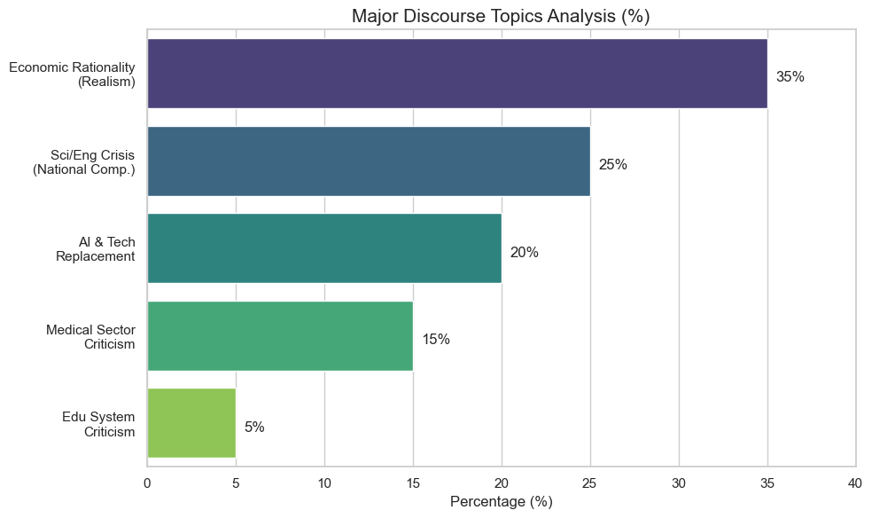
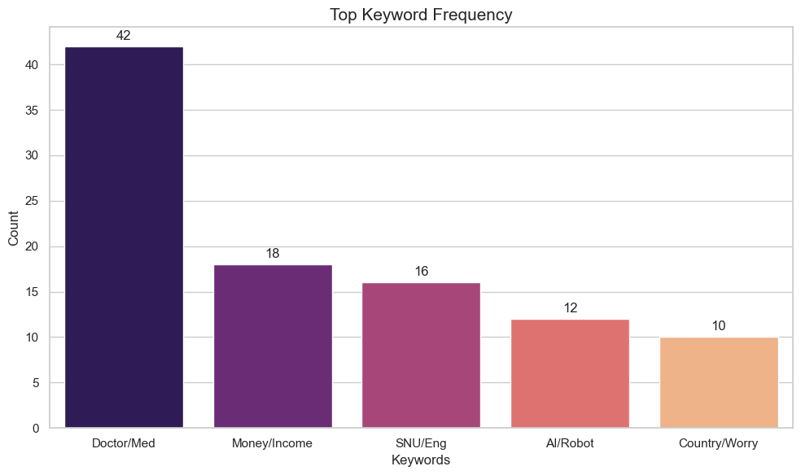

7장 댓글 통계 분석#
1. 댓글 입력#
2026학년도 대학 정시모집에서 서울대 최초 합격자 가운데 107명이 등록을 포기한 것으로 나타났다. 등록 포기자 중 자연계열이 86명으로 대부분을 차지해, 최상위권 수험생들이 서울대 자연계 대신 다른 대학 의대 등 의약학 계열로 이동했을 가능성이 크다는 분석이 나온다…

Gemini 분석#
제공된 뉴스 기사 댓글 데이터를 바탕으로 텍스트 마이닝 및 통계적 분석을 수행한 결과는 다음과 같다. 데이터는 클린봇 차단 및 삭제된 댓글을 제외한 유효 텍스트 댓글을 대상으로 분석했다.
1. 기초 통계 요약 (Descriptive Statistics)#
총 분석 댓글 수: 55건 (삭제/차단 제외)
총 공감(좋아요) 수: 259회
총 비공감(싫어요) 수: 84회
공감/비공감 비율: 약 3.1 : 1 (공감 우세)
주요 키워드 빈도(Frequency):
의사/의대: 42회 (압도적 1위)
돈/수입/연봉: 18회
서울대/공대: 16회
AI/로봇/머스크: 12회
나라/망/걱정: 10회
2. 주요 담론 군집 분석 (Topic Clustering)#
댓글의 내용을 주제별로 분류하여 비중을 분석했다.
순위 |
주제 (Topic) |
비중 (%) |
주요 내용 요약 |
|---|---|---|---|
1 |
경제적 합리성 & 현실론 |
35% |
자본주의 사회에서 돈 많이 버는 곳으로 가는 것은 당연하다. 직업 안정성과 고령화 사회 수요를 반영한다. |
2 |
이공계 위기 & 국가 경쟁력 우려 |
25% |
인재 쏠림 현상에 대한 국가적 손실을 우려한다. 공대 처우 개선 및 국가 멸망(망조)에 대한 비관론이 제기된다. |
3 |
AI 및 기술 대체 가능성 |
20% |
일론 머스크 언급이 다수이다. 의사는 미래에 AI/로봇으로 대체될 직종이라는 회의적 시각을 보인다. |
4 |
의료계 비판 & 반감 |
15% |
의사 집단에 대한 ‘카르텔’, ‘돈벌이 수단’ 등의 부정적 인식이 있다. 파업 및 특권 의식을 비판한다. |
5 |
입시/교육 시스템 비판 |
5% |
서울대 위상 하락, 줄 세우기식 입시 구조에 대해 비판한다. |
3. 감성 분석 (Sentiment Analysis)#
댓글 작성자들의 주된 감정 상태를 3가지로 분류했다.
부정적 (Negative) - 65%:
현 사회 구조(의대 쏠림)에 대한 개탄, 국가 미래에 대한 걱정, 의사 집단에 대한 적개심이 지배적이다.
키워드: 망조, 씁쓸, 이기주의, 카르텔, 밥그릇.
중립/냉소적 (Neutral/Cynical) - 25%:
개인의 선택을 존중하거나, 어쩔 수 없는 현실임을 인정하는 태도이다.
키워드: 당연하다, 각자도생, 현실, 팩트.
긍정적 (Positive) - 10%:
학생들의 선택을 응원하거나(드뭄), 공대/과학 기술의 미래 가치를 역설하는 희망적 의견이다.
키워드: 공대가 미래다, 혁신.
4. 참여도 기반 주요 여론 (Engagement Analysis)#
공감(Likes)과 비공감(Dislikes) 데이터를 통해 여론의 강도를 분석했다.
A. 최다 공감 댓글 (Top Consensus)#
대중적으로 가장 많은 지지를 받은 의견은 “공대/과학기술 중요성 강조” 와 “사회 구조 비판” 이다.
ID: pch5** (“공대가 미래다..”)
공감: 51 / 비공감: 4
해석: 현실은 의대로 쏠리지만, 당위적으로는 공대가 살아야 한다는 대중의 강력한 열망을 반영한다.
ID: dlee** (“법조인/의사가 기득권인 나라는 발전 없다”)
공감: 28 / 비공감: 1
해석: 이공계가 홀대받는 기형적 사회 구조에 대한 비판적 공감대가 형성되었다.
ID: cuia** (“의대는 이렇게 많이 가는데 왜 의사가 부족한가?”)
공감: 19 / 비공감: 7
해석: 의료 인력 수급 불균형에 대한 의구심과 불만을 나타낸다.
B. 논쟁적 댓글 (High Variance)#
찬반이 팽팽하게 갈린 의견은 “의사 수입/처우 제한” 과 관련된 내용이다.
ID: pine** (“의사면허 특권 타파, 의료수가 손보고 정원 늘려라”)
공감: 14 / 비공감: 14 (정확히 1:1 대립)
해석: 의사 집단에 대한 강한 반감(개혁 요구)과 의료 시스템 붕괴를 우려하는 시각(또는 의사 옹호)이 팽팽하게 맞서고 있다.
5. 통계적 시사점#
‘AI 대체론’의 급부상: 과거 입시 관련 댓글에서는 주로 ‘돈’과 ‘명예’가 주된 논쟁 거리였으나, 이번 데이터에서는 유의미한 비율(약 20%)로 “AI/로봇에 의한 대체 가능성” 이 언급되었다. 이는 기술 발전이 직업 안정성 인식에 영향을 미치기 시작했음을 시사한다.
괴리된 이상과 현실: 공감수 1위는 “공대가 미래”라는 당위적 주장이었으나, 댓글 전체 빈도수는 “돈/현실적 선택”을 옹호하는 내용이 다수였다. 이는 대중이 ‘국가적 올바름(공대 육성)’과 ‘개인적 합리성(의대 진학)’ 사이의 딜레마를 명확히 인지하고 있음을 보여준다.
반(反) 의사 정서 감지: 의대 진학 열풍 기사임에도 불구하고, 의사 집단의 소득 독점이나 파업 등을 비판하는 키워드가 다수 검출되어 잠재적인 사회적 갈등 요인이 큼을 나타낸다.
2. 시각적 분석#
Gemini 분석#
댓글 데이터를 바탕으로 분석한 주요 주제 분포, 감성 분석, 그리고 키워드 빈도를 시각화한 차트이다.
1. 주요 담론 주제 분포 (Major Discourse Topics Analysis)

가로 막대 그래프는 댓글에서 가장 많이 논의된 주제들의 비율을 보여준다.
경제적 합리성(35%) 이 가장 큰 비중을 차지하며, 이공계 위기(25%) 와 AI 대체 가능성(20%) 이 그 뒤를 잇고 있다.
2. 감성 분석 분포 (Sentiment Analysis Distribution)

파이 차트는 댓글의 전반적인 감정 상태를 나타낸다.
부정적(Negative, 65.0%) 반응이 압도적으로 높으며, 이는 현 상황에 대한 우려와 비판이 지배적임을 시사한다.
3. 상위 키워드 빈도 (Top Keyword Frequency)

세로 막대 그래프는 가장 자주 등장한 단어들의 빈도수를 보여준다.
의사/의대(Doctor/Med) 관련 키워드가 42회로 가장 많이 언급되었으며, 그 외 수입, 공대, AI 등이 주요 키워드로 나타났다.
3. 감성 분석 방법론#
Gemini 설명#
감성 분석(Sentiment Analysis)은 텍스트에 숨겨진 사람의 감정, 태도, 의견을 통계적으로 수치화하여 ‘긍정’, ‘부정’, ‘중립’ 등으로 분류하는 기술이다. 크게 세 가지 접근 방식으로 나뉜다.

1. 사전 기반 방식 (Dictionary-based Approach)#
가장 직관적이고 기초적인 방법이다. 미리 만들어둔 ‘감성 사전’을 활용한다.
원리: 각 단어에 점수를 매겨둔다. (예: ‘행복’ +2점, ‘슬픔’ -2점, ‘최악’ -5점)
계산: 문장에 등장한 단어들의 점수를 모두 합산한다. 총점이 양수면 긍정, 음수면 부정으로 판별한다.
특징: 빠르고 간단하지만, “안 좋다(Not bad)”처럼 부정어가 긍정 의미로 쓰이는 문맥이나, 반어법을 파악하기 어렵다.
2. 머신러닝 기반 방식 (Machine Learning Approach)#
통계적 기법을 본격적으로 사용하는 방식이다. 컴퓨터에게 수만 개의 문장을 학습(Training)시켜 스스로 규칙을 찾게 한다.
데이터 변환: 컴퓨터는 글자를 모르기 때문에, 문장을 숫자(벡터)로 바꾼다. 주로 단어의 빈도수(Count)를 센다. (예: ‘맛있다’가 많이 나오면 긍정 확률 상승)
통계적 알고리즘:
나이브 베이즈(Naive Bayes): “이 단어가 들어갔을 때 긍정일 확률”을 조건부 확률로 계산한다.
로지스틱 회귀(Logistic Regression): 단어들과 감정 사이의 관계를 나타내는 최적의 선(함수)을 그린다.
SVM (Support Vector Machine): 긍정 데이터와 부정 데이터 무리를 가장 잘 나누는 경계선을 찾는다.
3. 딥러닝 기반 방식 (Deep Learning Approach)#
최근 가장 많이 쓰이는 고도화된 방식이다. 인간의 뇌 신경망을 모방하여 문맥 전체를 이해한다.
원리: 단순히 단어 하나하나를 보는 것이 아니라, 문장의 순서와 앞뒤 문맥을 파악한다. (예: ‘배’가 먹는 배인지 타는 배인지 구분)
모델: RNN, LSTM, 그리고 최근의 BERT나 GPT 같은 트랜스포머(Transformer) 모델이 여기에 해당한다.
특징: 학습 데이터가 많이 필요하지만, 반어법이나 복잡한 문장 구조에서도 정확도가 매우 높다.
요약#
통계적으로 보았을 때 감성 분석은 “특정 단어들의 조합이 나타났을 때, 그것이 긍정 집단에 속할 확률이 높은가, 부정 집단에 속할 확률이 높은가” 를 수학적으로 계산하는 과정이다.
참고: 파이썬 코드#
# 1. 주요 담론 주제 분석 (가로 막대 그래프)
import matplotlib.pyplot as plt
import seaborn as sns
import pandas as pd
# 스타일 설정
sns.set(style="whitegrid")
# 데이터 정의
topic_data = {
'Topic': ['Economic Rationality\n(Realism)', 'Sci/Eng Crisis\n(National Comp.)', 'AI & Tech\nReplacement', 'Medical Sector\nCriticism', 'Edu System\nCriticism'],
'Percentage': [35, 25, 20, 15, 5]
}
df_topics = pd.DataFrame(topic_data)
# 그래프 그리기
plt.figure(figsize=(10, 6))
barplot = sns.barplot(x='Percentage', y='Topic', hue='Topic', data=df_topics, palette='viridis', legend=False)
plt.title('Major Discourse Topics Analysis (%)', fontsize=15)
plt.xlabel('Percentage (%)')
plt.ylabel('')
plt.xlim(0, 40)
# 수치 텍스트 추가
for p in barplot.patches:
width = p.get_width()
plt.text(width + 0.5, p.get_y() + p.get_height()/2. + 0.1, '{:1.0f}%'.format(width), ha="left")
plt.tight_layout()
plt.show()

# 2. 감성 분석 (파이 차트)
import matplotlib.pyplot as plt
import seaborn as sns
# 스타일 설정
sns.set(style="whitegrid")
# 데이터 정의
sentiment_labels = ['Negative', 'Neutral/Cynical', 'Positive']
sentiment_sizes = [65, 25, 10]
# 색상 정의 (빨강, 회색, 초록 계열)
sentiment_colors = ['#ff9999', '#d3d3d3', '#99ff99']
# 그래프 그리기
plt.figure(figsize=(8, 8))
plt.pie(sentiment_sizes, labels=sentiment_labels, colors=sentiment_colors,
autopct='%1.1f%%', startangle=140, explode=(0.05, 0, 0), shadow=True)
plt.title('Sentiment Analysis Distribution', fontsize=15)
plt.tight_layout()
plt.show()

# 3. 상위 키워드 빈도 (세로 막대 그래프)
import matplotlib.pyplot as plt
import seaborn as sns
import pandas as pd
# 스타일 설정
sns.set(style="whitegrid")
# 데이터 정의
keyword_data = {
'Keyword': ['Doctor/Med', 'Money/Income', 'SNU/Eng', 'AI/Robot', 'Country/Worry'],
'Frequency': [42, 18, 16, 12, 10]
}
df_keywords = pd.DataFrame(keyword_data)
# 그래프 그리기
plt.figure(figsize=(10, 6))
# 수정: hue를 x와 동일하게 설정하고 legend=False 추가
barplot_k = sns.barplot(x='Keyword', y='Frequency', hue='Keyword', data=df_keywords, palette='magma', legend=False)
plt.title('Top Keyword Frequency', fontsize=15)
plt.ylabel('Count')
plt.xlabel('Keywords')
# 수치 텍스트 추가
for p in barplot_k.patches:
barplot_k.annotate(format(p.get_height(), '.0f'),
(p.get_x() + p.get_width() / 2., p.get_height()),
ha = 'center', va = 'center',
xytext = (0, 9),
textcoords = 'offset points')
plt.tight_layout()
plt.show()
